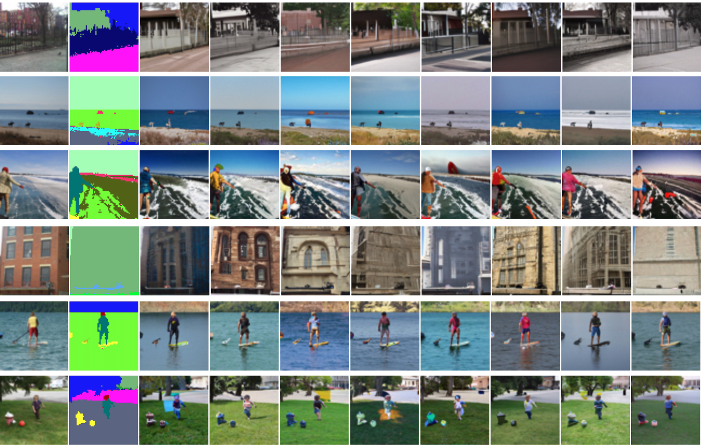
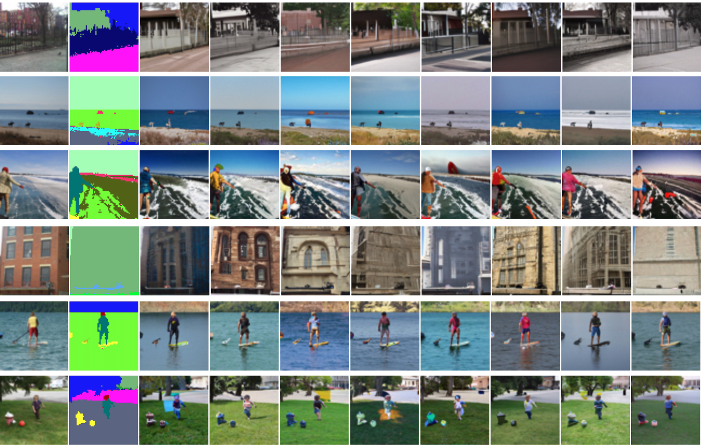

Self-Guided Diffusion Models
Vincent Tao HU* David W Zhang* Yuki M. Asano Gertjan J. Burghouts Cees G. M. Snoek
University of Amsterdam, TNO
Arxiv
|  |
Acknowledgement
This page style is borrowed from https://nvlabs.github.io/SPADE/
|  |
This page style is borrowed from https://nvlabs.github.io/SPADE/